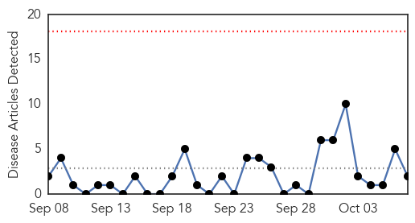
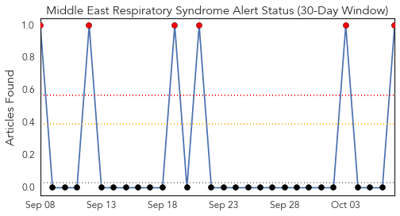
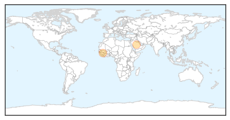
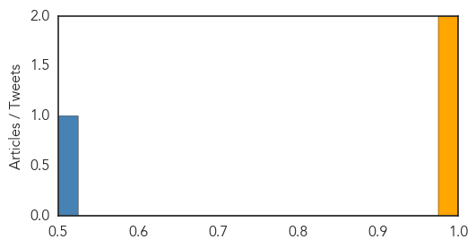

Pertussis
30-Day Web Trend
0 alerts, 0 warnings

30-Day Twitter Trend
0 alerts, 0 warnings

Article Locations

Article Confidences

Top Articles:
Top Tweets:
-
No tweets found for Oct 07, 2014
MERS
30-Day Web Trend
0 alerts, 0 warnings

30-Day Twitter Trend
4 alerts, 0 warnings

Article Locations
Article Confidences
Top Articles:
Top Tweets:
- 0.521
- Synthesizing data and models for the spread of MERS-CoV 2013: key role of index cases and hospital transmission. http://t.co/LkZKBIh6zy